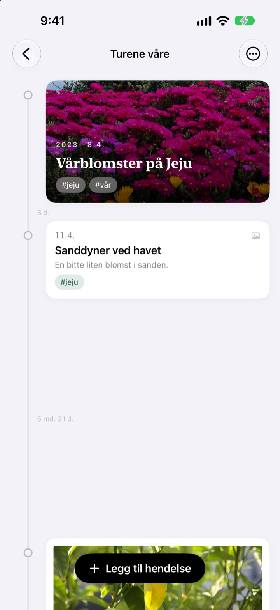
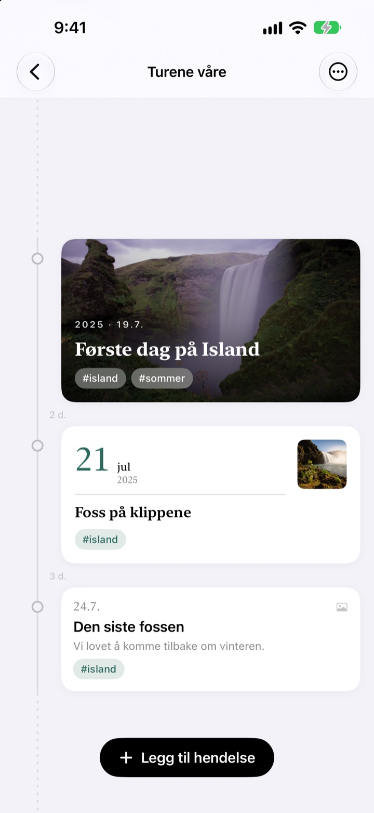
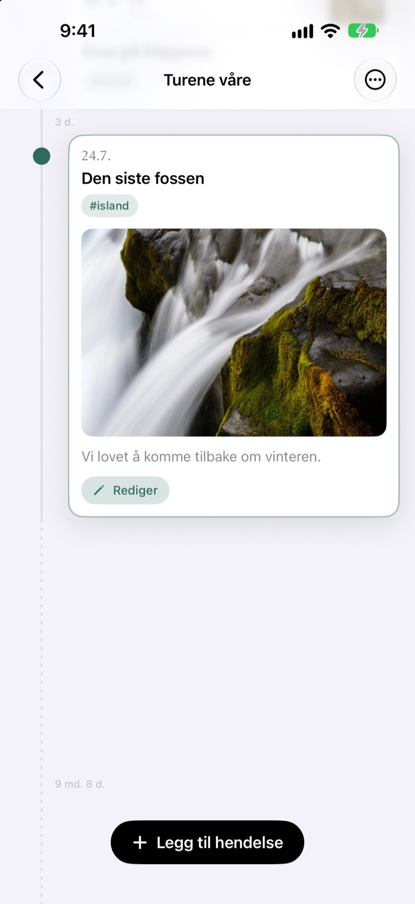
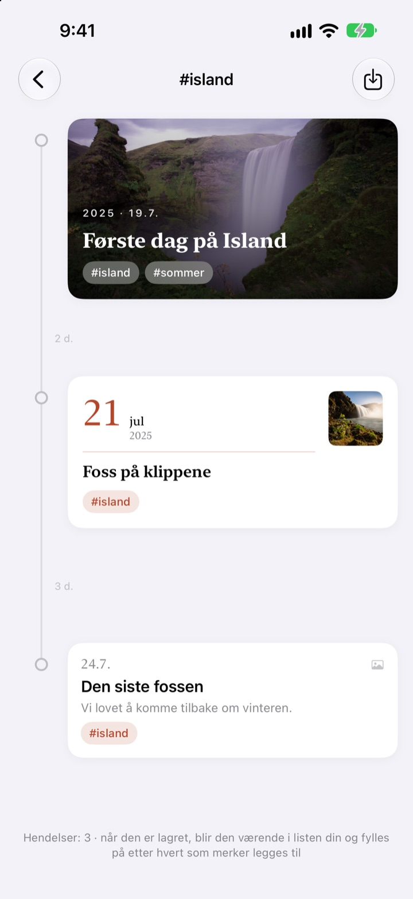
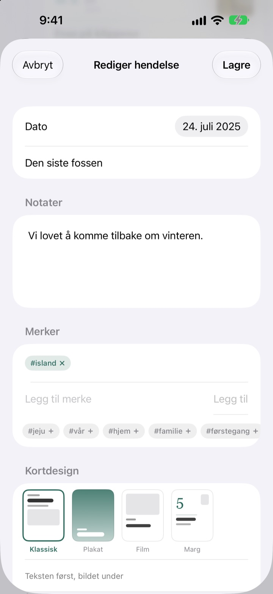

En tidslinje
som strekker seg med tiden
Tre dager og fem dager står i forholdet 3:5. En lang pause som to år og fire måneder brettes sammen til en stiplet linje. Bare ved å se på avstandene skjønner du hvordan tiden gikk.
Alle funksjoner er gratis. For iPhone og iPad.

Strekk ut avstandene selv
Hver knapp legger til en ny hendelse etter den siste. Avstandene følger samme regel som i appen.
Bildebiblioteket viser ikke tiden
Bildebiblioteket stiller opp alt etter dato, men tre dager og to år tar like mye plass: ett steg. Yeoul setter hendelser like langt fra hverandre som tiden mellom dem, så du ser med en gang når det skjedde mye og når det var stille.
Avstanden er tiden
Hele tidslinjen har én skala: Samme periode er like lang overalt på skjermen. Ved hver avstand står den ekte varigheten, for eksempel 3 d. eller 5 md. 21 d.
Hendelser som ligger svært tett får likevel litt luft, og svært lange pauser brettes sammen til en stiplet linje.

Den finner bildene fra den dagen
Velg datoen og trykk på Finn relaterte bilder for å se hva du tok den dagen. Ingenting som passer? Med Finn selv velger du selv.
Trykk på en hendelse i tidslinjen, så folder bilde og tekst seg ut akkurat der.

Ett merke samler spredte øyeblikk
Gi hendelser et merke som #Island, trykk på det, og alle hendelser med det merket fra alle tidslinjene dine samles i en ny.
Lagre den, så blir den stående i listen og tar selv med nye hendelser med samme merke.

Riktig kort til hvert øyeblikk
Klassisk setter teksten først, Plakat fyller kortet med bildet, Film rammer det inn som en papirkopi, og Marg lar en stor dato ta plassen. Forhåndsvisningen endres med en gang.

I gang på tre steg
- 1
Lag en tidslinje
Barnets første år, et forhold, en reise: hver med eget navn og egen farge.
- 2
Legg til hendelser
Skriv dato og tittel, og legg ved et bilde fra den dagen.
- 3
Gi dem merker
Hendelser med samme merke samles på tvers av tidslinjer.
Fire kortdesign
- Klassisk
- Teksten først, bildet under.
- Plakat
- Bildet fyller hele kortet med en stor tittel over. Uten bilde brukes tidslinjens farge.
- Film
- Et bilde med kant som en papirkopi, skrivemaskinskrift og datostempel.
- Marg
- Et stort datotall og et lite bilde. Her er det ordene som har hovedrollen.
En ny hendelse starter med samme design som det nyeste kortet i tidslinjen.
Alle funksjoner er gratis
Gratis
- Så mange tidslinjer du vil, med navn og farge
- Bilder, historier og merker på hver hendelse
- Finn bilder fra dagen hendelsen skjedde
- Lagrede merketidslinjer
- Fire kortdesign
- iCloud-synkronisering mellom iPhone og iPad
- Registrer med Snarveier og Siri
Støtt utvikleren
- Velg en liten, middels eller stor tips
- Den låser ikke opp noe. Det er bare en måte å si takk på
Du finner det i innstillingene i appen, når du har lyst.
Ingen reklame, ikke noe abonnement.
Vanlige spørsmål
Hvorfor er avstandene mellom hendelsene så ulike?
Yeoul setter hendelser like langt fra hverandre som tiden som faktisk gikk. Alle avstander har samme skala, så tre dager og fem dager står i forholdet 3:5. Hendelser som ligger svært tett får en minsteavstand så de ikke overlapper, og svært lange pauser brettes sammen til en stiplet linje med den ekte varigheten, for eksempel 2 år 4 md.
Jeg ser ikke bildene fra den dagen.
Søk etter dato krever tilgang til bildene dine. Gi tilgang under Innstillinger > Yeoul > Bilder. Yeoul ser etter bilder tatt fra midnatt til midnatt den dagen, i enhetens tidssone. Vil du ikke gi tilgang, trykker du på Finn selv rett under.
Hva er en merketidslinje?
Trykk på merket til en hendelse, så samler Yeoul alle hendelser med det merket fra alle tidslinjene dine i én. De du ofte ser på, kan du lagre i listen. Ingenting kopieres: Endrer du den opprinnelige hendelsen, vises endringen her også, og sletter du merketidslinjen, blir hendelsene liggende.
Hvorfor kan jeg ikke legge til hendelser i en merketidslinje?
En merketidslinje er en visning samlet etter merke, ikke et sted å lagre hendelser, så det går ikke å avgjøre hvilken tidslinje en ny hendelse hører til. Legg den til i sin egen tidslinje med merket, så dukker den opp her av seg selv.
Kan jeg registrere noe uten å åpne appen?
Ja. Bruk Registrer en hendelse i Snarveier-appen eller med Siri, og velg bare tidslinje og tittel. Uten dato brukes klokkeslettet nå.
Ser jeg tidslinjene mine på andre enheter?
Ja, på alle iPhoner og iPader som er logget på iCloud med samme Apple-konto. Sjekk under Innstillinger > navnet ditt > iCloud at iCloud er slått på. Avhengig av forbindelsen kan det ta et øyeblikk.
Hvordan sletter jeg dataene mine?
Sveip en tidslinje mot venstre i listen, eller trykk på Rediger. Når en tidslinje slettes, slettes hendelsene i den også. Det som ligger igjen i iCloud, fjerner du under administrering av lagringsplass i iCloud-innstillingene.
Ser utvikleren dataene mine?
Nei. Hendelsene og bildene dine ligger bare på enhetene dine og i din egen iCloud, og utvikleren kan ikke se dem. Detaljene står i personvernerklæringen nedenfor.
Hvordan melder jeg fra om en feil eller foreslår noe?
Rett fra innstillingene i appen, på e-post eller på Instagram via @lee25_ios. Skriv gjerne enhetsmodell, iOS-versjon og hva som skjedde, så kan vi hjelpe raskere.
Spørsmål eller idéer? Skriv til leeo@kakao.com.